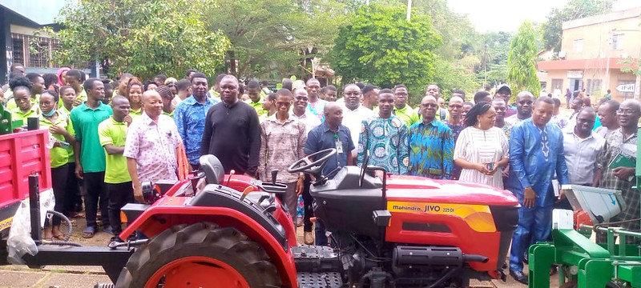

1. Formation certifiante de mécaniciens agricoles
Objectif :
Créer un réseau national de techniciens capables d’assurer la maintenance des équipements agricoles, notamment les tracteurs.
Contenu de la formation:
- Entretien régulier des tracteurs.
- Diagnostic et réparation des pannes mécaniques.
- Méthodes de maintenance préventive et curative.
- Sécurité et bonnes pratiques en atelier.
Impact :
Cette formation permet de pérenniser les efforts de mécanisation agricole en garantissant que les machines restent opérationnelles sur le long terme.
2. Formation des acquéreurs de kits agricoles (tracteurs et motoculteurs)

Objectif :
Accompagner les nouveaux utilisateurs dans la prise en main de leurs équipements et les sensibiliser aux bonnes pratiques agricoles.
Contenu de la formation:
- Modules de niveau 1 et 2 selon le profil de l’acquéreur.
- Utilisation optimale des machines agricoles.
- Itinéraires culturaux adaptés aux sols béninois.
- Techniques de conservation des sols et de réduction de l’érosion.
Impact :
Les producteurs deviennent autonomes dans l’utilisation de leurs machines et améliorent la productivité tout en respectant l’environnement.
3. Formation des artisans locaux pour l’irrigation goutte à goutte
Objectif :
Constituer un réseau d’artisans capables d’assurer le service après-vente des équipements d’irrigation distribués par la SoNaMA.Les techniques d’irrigation agricole sont des méthodes pour apporter de l’eau aux cultures et sont classifiées en irrigation de surface, irrigation par aspersion et micro irrigation.
Décider de sélectionner une technique d’irrigation ou de passer à une technique plus efficiente est compliqué. D’un point de vue de la préservation de l’eau, le choix est simple, les économies en eaux augmentent lorsque l’on passe de l’irrigation de surface à l’aspersion et de l’aspersion à la micro irrigation.
Cependant, le succès d’une technique d’irrigation sera très dépendant du site, de facteurs de situation ainsi que du niveau de gestion utilisé.
Contenu de la formation:
- Installation de systèmes d’irrigation goutte à goutte.
- Maintenance et dépannage des équipements.
- Sensibilisation à l’économie d’eau et à l’efficacité énergétique.
Impact :
Renforce les capacités locales et favorise l’accès durable à l’irrigation moderne dans les zones rurales.